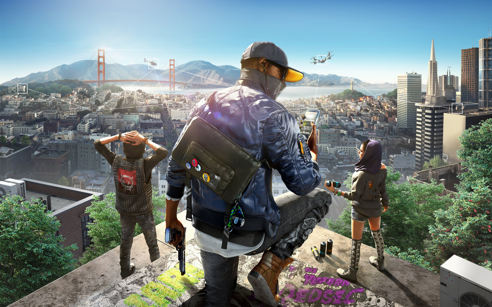
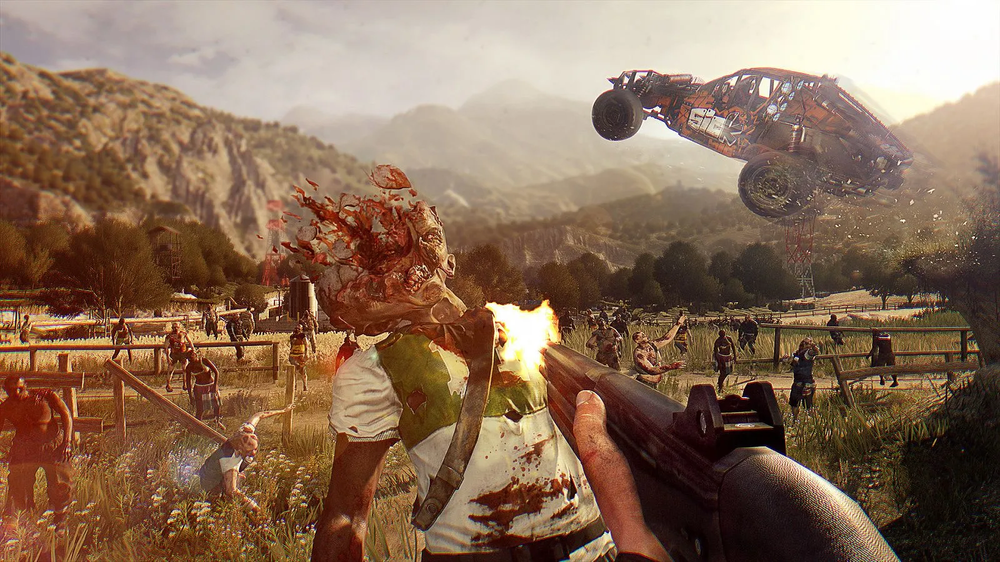
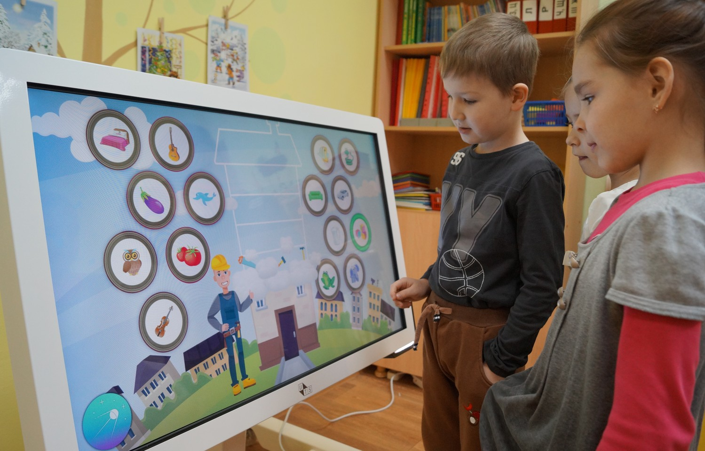
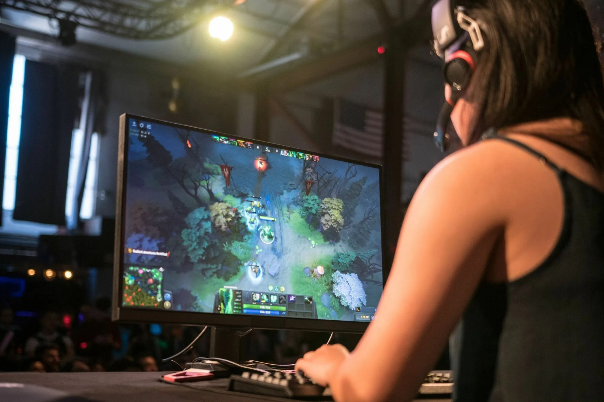

Как искусственный интеллект меняет мир игр
Искусственный интеллект (ИИ) давно вышел за рамки научной фантастики и стал неотъемлемой частью нашей повседневной жизни. Одной из областей, где ИИ оказал наибольшее влияние, является индустрия видеоигр. Современные технологии ИИ не только изменяют способы разработки игр, но и кардинально преобразуют игровой опыт. Давайте рассмотрим, как именно искусственный интеллект переопределяет будущее мира игр.
Улучшение игровых механик
ИИ способен создавать более реалистичных и умных неигровых персонажей (NPC), что делает виртуальный мир более живым и интерактивным. Персонажи могут адаптироваться к действиям игроков, предлагая уникальные взаимодействия и создавая неповторимый игровой опыт при каждом прохождении.
Процедурная генерация контента
ИИ используется для создания бесконечных игровых миров через процедурную генерацию, позволяя игрокам исследовать уникальные пейзажи, которые создаются автоматически. Это не только экономит время разработчиков, но и обеспечивает игрокам неповторимый опыт при каждой игре.
Адаптивный геймплей
С помощью ИИ игры становятся способны анализировать стиль игры и предпочтения игроков, адаптируя сложность заданий и поведение противников. Это создает оптимальный уровень сложности и делает игровой процесс более захватывающим и персонализированным.
Развитие обучающих игр
ИИ открывает новые возможности для обучающих и тренировочных программ в игровой форме, адаптируя учебный материал под нужды и уровень знаний пользователя. Обучающие игры на основе ИИ могут использоваться в самых разных сферах, от школьного образования до профессионального тренинга.
Улучшение игровых тестов
Искусственный интеллект также революционизирует процесс тестирования игр, автоматизируя поиск ошибок и несоответствий в игровом процессе. Это позволяет разработчикам более эффективно оптимизировать игры до их выпуска.
Искусственный интеллект не просто изменяет индустрию видеоигр — он открывает совершенно новые горизонты для развития игрового искусства. От реалистичных миров и персонажей до персонализированного и адаптивного игрового процесса — ИИ обещает сделать будущее игр более захватывающим и вовлекающим, чем когда-либо.